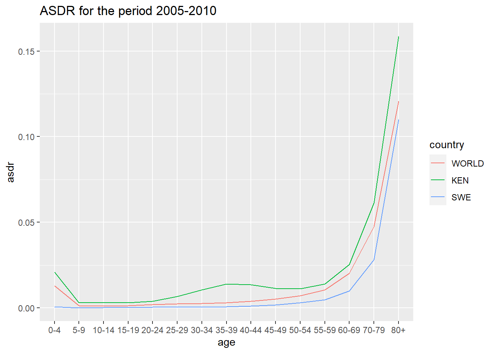
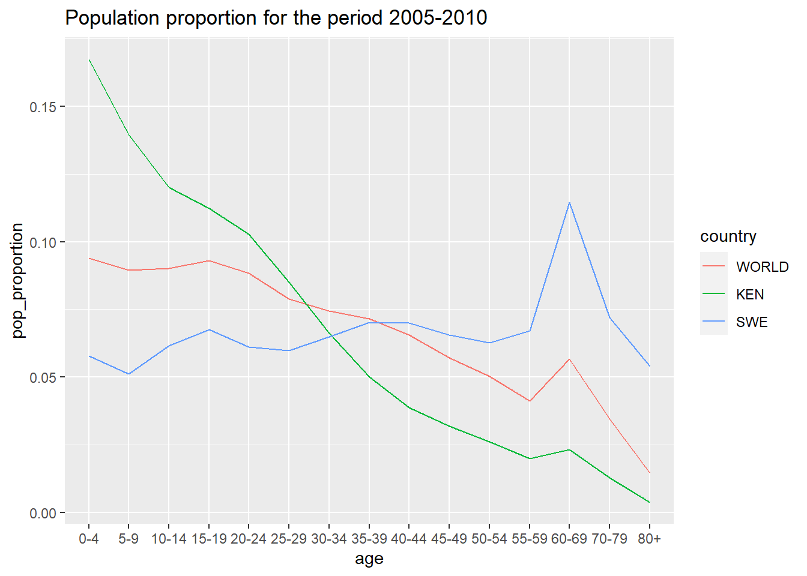

# Read provided data ----
world_data <- read_csv(file = file.path(data_path, "raw_data", "World.csv"))
kenya_data <- read_csv(file = file.path(data_path, "raw_data", "Kenya.csv"))
sweden_data <- read_csv(file = file.path(data_path, "raw_data", "Sweden.csv"))Understanding World Population Dynamics
Assignment 1 - PSYC593
Understanding population dynamics is important for many areas of social science. We will calculate some basic demographic quantities of births and deaths for the world’s population from two time periods: 1950 to 1955 and 2005 to 2010. We will analyze the following CSV data files - Kenya.csv, Sweden.csv, and World.csv. Each file contains population data for Kenya, Sweden, and the world, respectively. The table below presents the names and descriptions of the variables in each data set.
| Name | Description |
|---|---|
country |
Abbreviated country name |
period |
Period during which data are collected |
age |
Age group |
births |
Number of births in thousands (i.e., number of children born to women of the age group) |
deaths |
Number of deaths in thousands |
py.men |
Person-years for men in thousands |
py.women |
Person-years for women in thousands |
Source: United Nations, Department of Economic and Social Affairs, Population Division (2013). World Population Prospects: The 2012 Revision, DVD Edition.
fix_data_type <- function(population_data) {
population_data %>%
mutate(
country = factor(country),
period = factor(period),
age = factor(age, levels = c(
"0-4", "5-9", "10-14", "15-19",
"20-24", "25-29", "30-34", "35-39",
"40-44", "45-49", "50-54", "55-59",
"60-69", "70-79", "80+"
)) # I'd love to learn if there is a smarter way to reorder the factor levels
)
}
world_data <- fix_data_type(world_data)
kenya_data <- fix_data_type(kenya_data)
sweden_data <- fix_data_type(sweden_data)The data are collected for a period of 5 years where person-year is a measure of the time contribution of each person during the period. For example, a person that lives through the entire 5 year period contributes 5 person-years whereas someone who only lives through the first half of the period contributes 2.5 person-years. Before you begin this exercise, it would be a good idea to directly inspect each data set. In R, this can be done with the View function, which takes as its argument the name of a data.frame to be examined. Alternatively, in RStudio, double-clicking a data.frame in the Environment tab will enable you to view the data in a spreadsheet-like view.
Question 1
We begin by computing crude birth rate (CBR) for a given period. The CBR is defined as: \[ \text{CBR} = \frac{\text{number of births}}{\text{number of person-years lived}} \]
Compute the CBR for each period, separately for Kenya, Sweden, and the world. Start by computing the total person-years, recorded as a new variable within each existing data.frame via the $ operator, by summing the person-years for men and women. Then, store the results as a vector of length 2 (CBRs for two periods) for each region with appropriate labels. You may wish to create your own function for the purpose of efficient programming. Briefly describe patterns you observe in the resulting CBRs.
Answer 1
# Create a function that computes py, where py = total person years for each
# population data. Since py applies to all rows in our data,
# we can append the tibble to include this variable.
compute_py <- function(population_data) {
population_data <- population_data %>%
mutate(py = py.men + py.women)
return(population_data)
}
world_data <- compute_py(world_data)
kenya_data <- compute_py(kenya_data)
sweden_data <- compute_py(sweden_data)# Function to compute the Crude Birth Rate (CBR)
compute_cbr <- function(population_data) {
population_data %>%
group_by(period) %>%
summarise(cbr = sum(births) / sum(py)) %>%
pull()
}# Compute the CBR for each data set
world_cbr <- compute_cbr(world_data)
kenya_cbr <- compute_cbr(kenya_data)
sweden_cbr <- compute_cbr(sweden_data)Create a tibble to showcase the CBR.
cbr_tibble <- tibble(
Regions = c("World", "Kenya", "Sweden"),
CBR_1950_1955 = c(world_cbr[1], kenya_cbr[1], sweden_cbr[1]),
CBR_2005_2010 = c(world_cbr[2], kenya_cbr[2], sweden_cbr[2])
)
cbr_tibble# A tibble: 3 × 3
Regions CBR_1950_1955 CBR_2005_2010
<chr> <dbl> <dbl>
1 World 0.0373 0.0202
2 Kenya 0.0521 0.0385
3 Sweden 0.0154 0.0119World CBR went down from period 1950-1955 to 2005-2010, and the same for both Kenya and Sweden. For both time periods, Kenya had higher CBR than World, while Sweden have lower CBR than world.
Question 2
The CBR is easy to understand but contains both men and women of all ages in the denominator. We next calculate the total fertility rate (TFR). Unlike the CBR, the TFR adjusts for age compositions in the female population. To do this, we need to first calculate the age specific fertility rate (ASFR), which represents the fertility rate for women of the reproductive age range \([15, 50)\). The ASFR for age range \([x, x+\delta)\), where \(x\) is the starting age and \(\delta\) is the width of the age range (measured in years), is defined as: \[ \text{ASFR}_{[x,\ x+\delta)} \ = \ \frac{\text{number of births to women of age $[x,\ x+\delta)$}}{\text{Number of person-years lived by women of age $[x,\ x+\delta)$}} \] Note that square brackets, \([\) and \(]\), include the limit whereas parentheses, \((\) and \()\), exclude it. For example, \([20, 25)\) represents the age range that is greater than or equal to 20 years old and less than 25 years old. In typical demographic data, the age range \(\delta\) is set to 5 years. Compute the ASFR for Sweden and Kenya as well as the entire world for each of the two periods. Store the resulting ASFRs separately for each region. What does the pattern of these ASFRs say about reproduction among women in Sweden and Kenya?
Answer 2
# Function to compute Age specific fertility rate (ASFR), including only
# reproductive age range [15,50). Since this variable does not apply to all
# rows in our tibble, we should not add it as a new column
reproductive_age <- c("15-19", "20-24", "25-29",
"30-34", "35-39", "40-44", "45-49")
compute_asfr <- function(population_data) {
population_data %>%
filter(age %in% reproductive_age) %>%
group_by(period) %>%
summarise(asfr = sum(births) / sum(py.women)) %>%
pull()
}# Compute ASFR for each data set
world_asfr <- compute_asfr(world_data)
kenya_asfr <- compute_asfr(kenya_data)
sweden_asfr <- compute_asfr(sweden_data)# Create a tibble to showcase the asfr
# Compare ASFRs for Kenya and Sweden
asfr_tibble <- tibble(
regions = c("World", "Kenya", "Sweden"),
asfr_1950_1955 = c(world_asfr[1], kenya_asfr[1], sweden_asfr[1]),
asfr_2005_2010 = c(world_asfr[2], kenya_asfr[2], sweden_asfr[2])
)
asfr_tibble# A tibble: 3 × 3
regions asfr_1950_1955 asfr_2005_2010
<chr> <dbl> <dbl>
1 World 0.152 0.0777
2 Kenya 0.235 0.158
3 Sweden 0.0628 0.0530When comparing Kenya and Sweden, we can see that Kenya had higher fertility rates (among women of reproductive ages) in both time periods 1950-1955 and 2005-2010. In fact, Kenya had higher fertility rates than the world for both time periods, while Sweden had lower than world fertility rates for both time periods.
Question 3
Using the ASFR, we can define the TFR as the average number of children women give birth to if they live through their entire reproductive age. \[ \text{TFR} = \text{ASFR}_{[15,\ 20)} \times 5 + \text{ASFR}_{[20,\ 25)} \times 5 + \dots + \text{ASFR}_{[45,\ 50)} \times 5 \]
We multiply each age-specific fertility rate rate by 5 because the age range is 5 years. Compute the TFR for Sweden and Kenya as well as the entire world for each of the two periods. As in the previous question, continue to assume that women’s reproductive age range is \([15, 50)\). Store the resulting two TFRs for each country or the world as a vector of length two. In general, how has the number of women changed in the world from 1950 to 2000? What about the total number of births in the world?
Answer 3
# We already had a tibble of ASFR by time periods. We can now simply add new
# columns for TRF
tfr_tibble <- asfr_tibble %>%
transmute(
regions = regions,
tfr_1950_1955 = asfr_1950_1955 * 5,
tfr_2005_2010 = asfr_2005_2010 * 5
)
tfr_tibble# A tibble: 3 × 3
regions tfr_1950_1955 tfr_2005_2010
<chr> <dbl> <dbl>
1 World 0.759 0.389
2 Kenya 1.17 0.792
3 Sweden 0.314 0.265cal_py_sum <- function(population_data) {
population_data %>%
group_by(period) %>%
summarise(
py_women_sum = sum(py.women),
py_men_sum = sum(py.men),
py_sum = sum(py)
)
}cal_birth_sum <- function(population_data) {
population_data %>%
group_by(period) %>%
summarise(
birth_sum = sum(births)
)
}(py_sum_world <- cal_py_sum(world_data))# A tibble: 2 × 4
period py_women_sum py_men_sum py_sum
<fct> <dbl> <dbl> <dbl>
1 1950-1955 6555686. 6541274. 13096959.
2 2005-2010 16554781. 16814019. 33368800.(py_sum_kenya <- cal_py_sum(kenya_data))# A tibble: 2 × 4
period py_women_sum py_men_sum py_sum
<fct> <dbl> <dbl> <dbl>
1 1950-1955 15937. 16168. 32105.
2 2005-2010 94605. 94289. 188894.(py_sum_sweden <- cal_py_sum(sweden_data))# A tibble: 2 × 4
period py_women_sum py_men_sum py_sum
<fct> <dbl> <dbl> <dbl>
1 1950-1955 17858. 17740. 35598.
2 2005-2010 23065. 22759. 45824.(birth_sum_world <- cal_birth_sum(world_data))# A tibble: 2 × 2
period birth_sum
<fct> <dbl>
1 1950-1955 488892.
2 2005-2010 674581.(birth_sum_kenya <- cal_birth_sum(kenya_data))# A tibble: 2 × 2
period birth_sum
<fct> <dbl>
1 1950-1955 1672.
2 2005-2010 7275.(birth_sum_sweden <- cal_birth_sum(sweden_data))# A tibble: 2 × 2
period birth_sum
<fct> <dbl>
1 1950-1955 548.
2 2005-2010 546.In general, the number of women increased from 1950s to 2000s. Interestingly, while the number of birth increased for world and Kenya, it stays pretty much the same for Sweden. Total fertility rates went down from the 1950s to 2000s for everyone.
Question 4
Next, we will examine another important demographic process: death. Compute the crude death rate (CDR), which is a concept analogous to the CBR, for each period and separately for each region. Store the resulting CDRs for each country and the world as a vector of length two. The CDR is defined as: \[ \text{CDR} = \frac{\text{number of deaths}}{\text{number of person-years lived}} \] Briefly describe patterns you observe in the resulting CDRs.
Answer 4
# Function to compute the Crude death rate (CDR)
compute_cdr <- function(population_data) {
population_data %>%
group_by(period) %>%
summarise(cdr = sum(deaths) / sum(py)) %>%
pull()
}# Compute the CDR for each data set
world_cdr <- compute_cdr(world_data)
kenya_cdr <- compute_cdr(kenya_data)
sweden_cdr <- compute_cdr(sweden_data)cdr_tibble <- tibble(
Regions = c("World", "Kenya", "Sweden"),
CDR_1950_1955 = c(world_cdr[1], kenya_cdr[1], sweden_cdr[1]),
CDR_2005_2010 = c(world_cdr[2], kenya_cdr[2], sweden_cdr[2])
)
cdr_tibble# A tibble: 3 × 3
Regions CDR_1950_1955 CDR_2005_2010
<chr> <dbl> <dbl>
1 World 0.0193 0.00817
2 Kenya 0.0240 0.0104
3 Sweden 0.00984 0.00997In general, death rate went down for everyone from the 1950s to the 2000s. When comparing regions, Kenya had a higher death rate than the world in the 1950s, while Sweden had a lower death rate than the world in the same time period. However, in time period 2005-2010, both Kenya and Sweden had higher death rates than the world.
Question 5
One puzzling finding from the previous question is that the CDR for Kenya during the period of 2005-2010 is about the same level as that for Sweden. We would expect people in developed countries like Sweden to have a lower death rate than those in developing countries like Kenya. While it is simple and easy to understand, the CDR does not take into account the age composition of a population. We therefore compute the age specific death rate (ASDR). The ASDR for age range \([x, x+\delta)\) is defined as: \[ \text{ASDR}_{[x,\ x+\delta)} \ = \ \frac{\text{number of deaths for people of age $[x,\ x+\delta)$}} {\text{number of person-years of people of age $[x,\ x+\delta)$}} \] Calculate the ASDR for each age group, separately for Kenya and Sweden, during the period of 2005-2010. Briefly describe the pattern you observe.
# Function to compute Age specific death rate (ASDR) for time period 2005-2010.
# Since data was already sorted by age groups, we do not need to group by age
compute_asdr <- function(population_data) {
population_data %>%
filter(period == "2005-2010") %>%
mutate(asdr = deaths / py)
}# Compute ASDR for each data set
world_asdr <- compute_asdr(world_data)
kenya_asdr <- compute_asdr(kenya_data)
sweden_asdr <- compute_asdr(sweden_data)
# To later visualize the data, we create a tibble that contains data from all
# regions
all_asdr <- bind_rows(world_asdr, kenya_asdr, sweden_asdr)all_asdr %>%
ggplot() +
geom_line(aes(x=age, y=asdr, group=country, color=country)) +
labs(title = "ASDR for the period 2005-2010")
As we can see from the figure above, in the time period 2005-2010, Kenya has higher ASDR than both World and Sweden for all age groups. Sweden, on the other hand, had lower ASDRs than the world across all ages.
Question 6
One way to understand the difference in the CDR between Kenya and Sweden is to compute the counterfactual CDR for Kenya using Sweden’s population distribution (or vice versa). This can be done by applying the following alternative formula for the CDR. \[ \text{CDR} \ = \ \text{ASDR}_{[0, 5)} \times P_{[0,5)} + \text{ASDR}_{[5, 10)} \times P_{[5, 10)} + \cdots \] where \(P_{[x, x+\delta)}\) is the proportion of the population in the age range \([x, x+\delta)\). We compute this as the ratio of person-years in that age range relative to the total person-years across all age ranges. To conduct this counterfactual analysis, we use \(\text{ASDR}_{[x,x+\delta)}\) from Kenya and \(P_{[x,x+\delta)}\) from Sweden during the period of 2005–2010. That is, first calculate the age-specific population proportions for Sweden and then use them to compute the counterfactual CDR for Kenya. How does this counterfactual CDR compare with the original CDR of Kenya? Briefly interpret the result.
# Function to compute population proportion during period 2005-2010
compute_pop_prop <- function(population_data) {
population_data %>%
filter(period=="2005-2010") %>%
mutate(pop_proportion = py / sum(py)) %>%
ungroup()
}# Compute population proportion for each data set
world_pop_prop <- compute_pop_prop(world_data)
kenya_pop_prop <- compute_pop_prop(kenya_data)
sweden_pop_prop <- compute_pop_prop(sweden_data)# To visualize population proportion, first bind the data together
all_pop_prop <- bind_rows(world_pop_prop, kenya_pop_prop, sweden_pop_prop)
all_pop_prop %>%
ggplot() +
geom_line(aes(x=age, y=pop_proportion, group=country, color=country)) +
labs(title = "Population proportion for the period 2005-2010")
# Compute Kenyas CDR Kenya had Sweden's population distribution
kenya_asdr %>%
mutate(temp_cdr = asdr * sweden_pop_prop$pop_proportion) %>%
summarise(cdr_re_sweden = sum(temp_cdr))# A tibble: 1 × 1
cdr_re_sweden
<dbl>
1 0.0232# Using Kenya's own population distribution
kenya_asdr %>%
mutate(temp_cdr = asdr * kenya_pop_prop$pop_proportion) %>%
summarise(cdr_re_kenya = sum(temp_cdr))# A tibble: 1 × 1
cdr_re_kenya
<dbl>
1 0.0104Using Sweden’s population distribution, Kenya would have had a higher CDR. This is because, as can be seen from the plot above, Sweden more older population. Since age-specific death rates are the highest in older population in Kenya, a higher ASDR times a higher rates of older population would result in higher CDR.